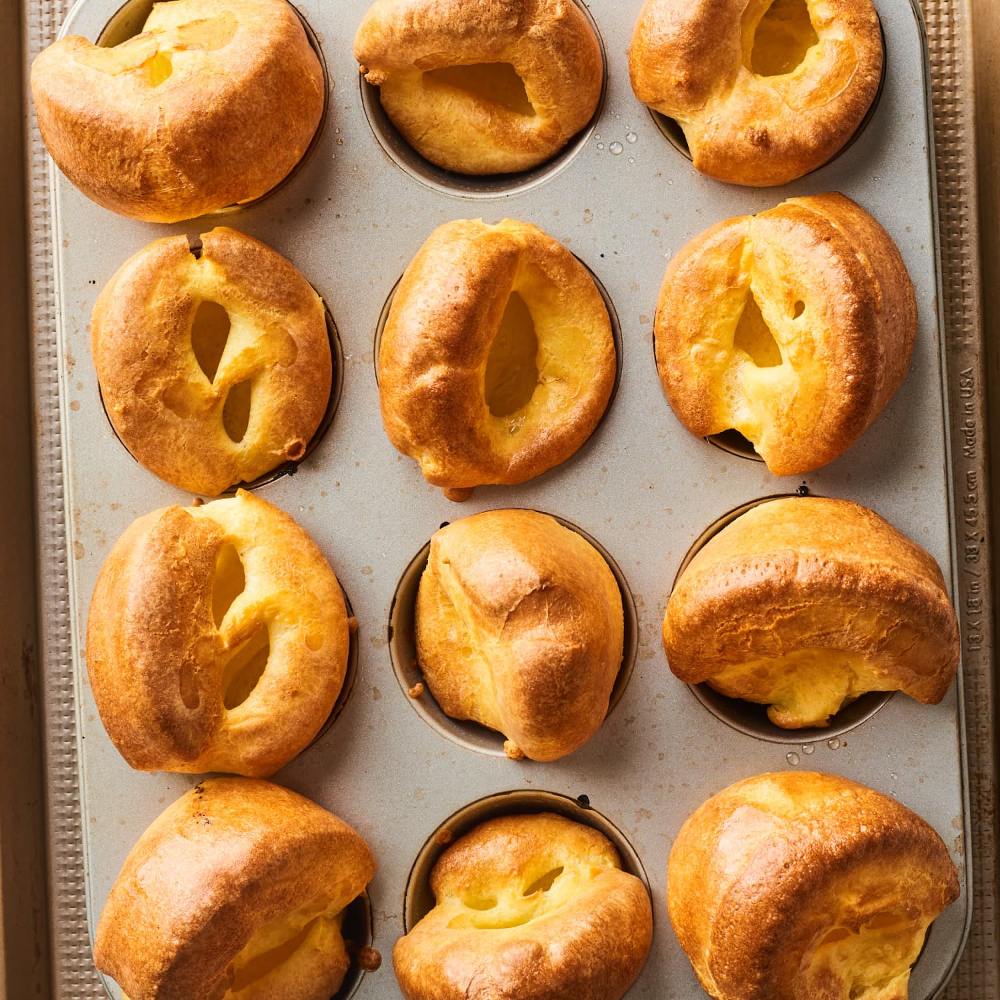
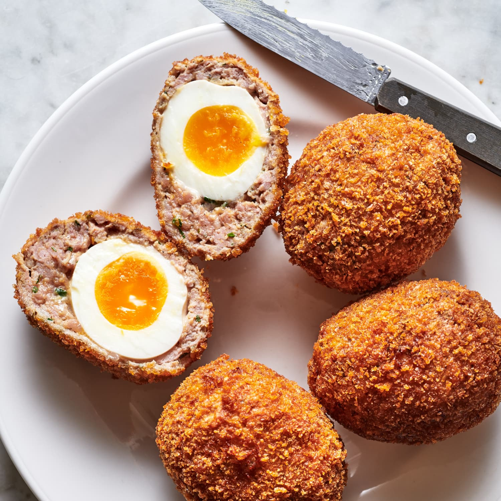
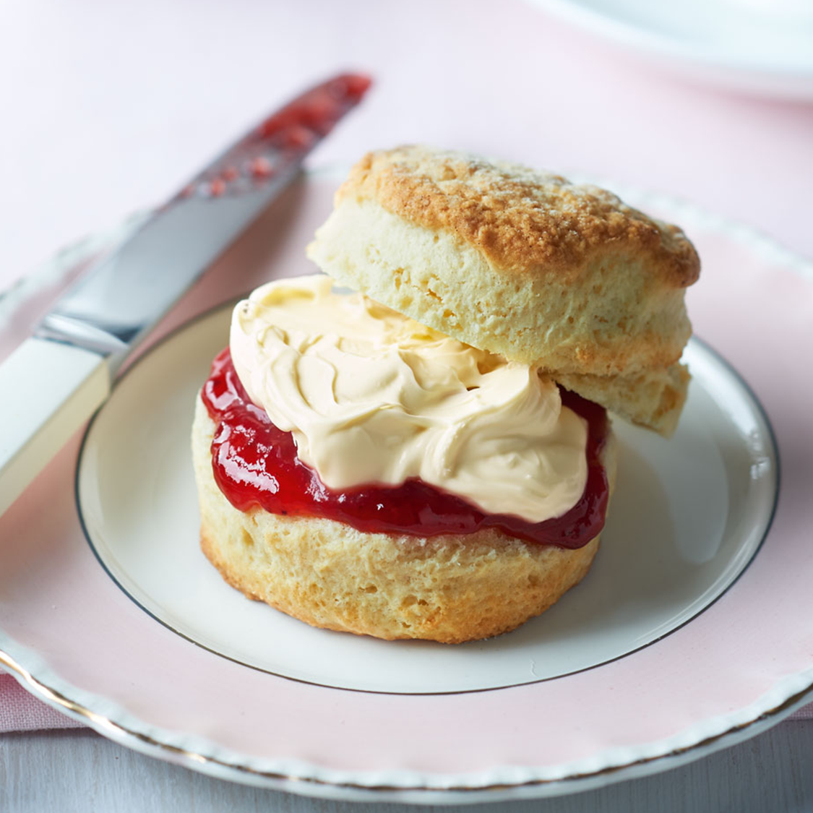
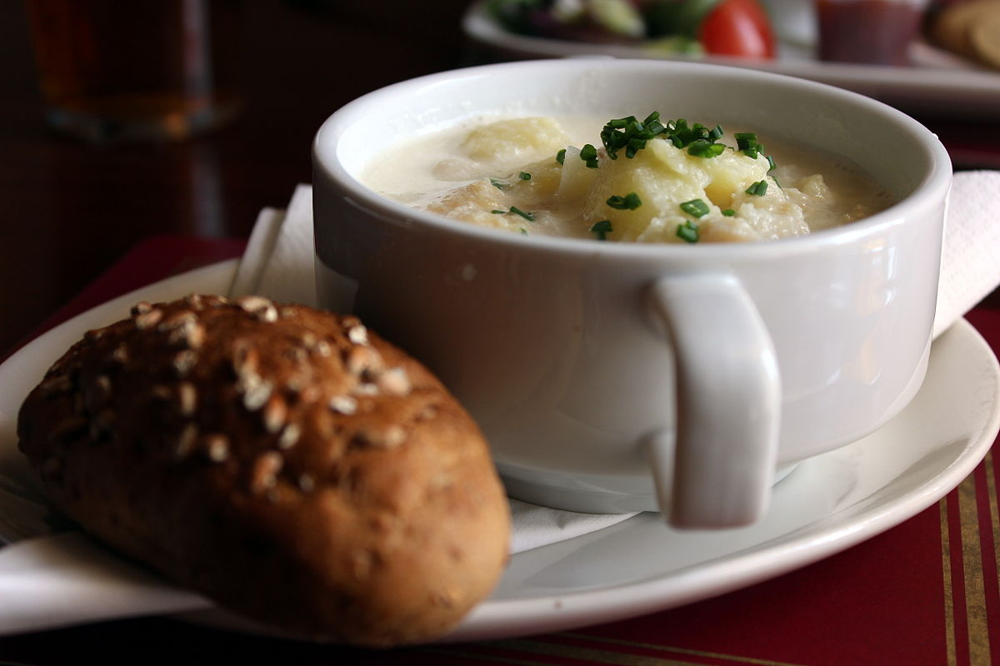

This Traditional Shepherd's Pie is a British comfort food classic
loved by all.Shepherd's pie, cottage pie, or in its French version
hachis Parmentier is a savoury dish of cooked minced meat topped with
mashed potato and baked.
Yorkshire Pudding

Yorkshire pudding is a baked pudding made from a batter of eggs,
flour, and milk or water.A common British side dish, it is a versatile
food that can be served in numerous ways depending on its ingredients,
size, and the accompanying components of the meal. As a first course,
it can be served with onion gravy.
Scotch egg

A common British side dish, it is a versatile food that can be served
in numerous ways depending on its ingredients, size, and the
accompanying components of the meal. As a first course, it can be
served with onion gravy.Scotch eggs are a common picnic food. In the
United Kingdom packaged Scotch eggs are available in supermarkets,
corner shops and motorway service stations
Scones

A scone is a baked good, usually made of either wheat or oatmeal
with baking powder as a leavening agent, and baked on sheet pans. A
scone is often slightly sweetened and occasionally glazed with egg
wash. The scone is a basic component of the cream tea.
Cullen Skink

Cullen skink is a thick Scottish soup made of smoked haddock, potatoes
and onions. This soup is a local speciality, from the town of Cullen
in Moray, on the northeast coast of Scotland. It is often served as a
starter at formal Scottish dinners but is also widely served as an
everyday dish across the northeast of Scotland.
Bubble and Squeak
Bubble and squeak is a British dish made from cooked potatoes and
cabbage, mixed together and fried. The food writer Howard Hillman
classes it as one of the "great peasant dishes of the world".The dish
has been known since at least the 18th century, and in its early
versions it contained cooked beef; by the mid-20th century the two
vegetables had become the principal ingredients.